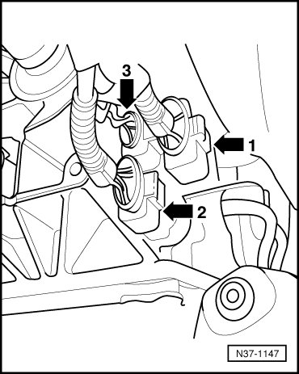
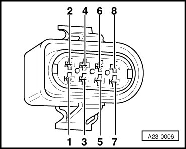
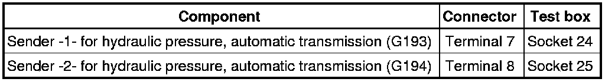

Hydraulic Pressure Sensors, Checking
Diagnostic Procedures
Hydraulic Pressure Sensors, Checking
Special tools, testers and auxiliary items required
• Multimeter (VAG1526) or Multimeter (VAG1715)
• Connector test kit (VAG1594)
• Wiring diagram
Test requirements
• Respective fuses in fuse box must be OK:
• Battery voltage must be at least 11.5 volts.
• Ground (GND) connections to transmission must be OK.
• Selector lever must be in P position.
• Ignition switched off.
Checking wires to Transmission Control Module (TCM)
- Connect test box to control module wiring harness , connect test box for wiring test.
- Disconnect 8-pin harness connector (arrow - 3 -).

- Check wires between test box and 8-pin connector to Transmission Control Module (TCM) for open circuit according to wiring diagram.

Wire resistance: max. 1.5 ohms

- Also check wires for short circuit to each other.
Specified value: infinite ohms
If no malfunctions are found in wires:
- Replace respective sender for hydraulic pressure.
Final Procedures
After the repair work, the following work steps must be performed in the following sequence:
1. Check the DTC memory. Refer to --> [ Diagnostic Mode 03 - Read DTC Memory ] Diagnostic Modes 01 - 09.
2. If necessary, erase the DTC memory. Refer to --> [ Diagnostic Mode 04 - Erase DTC Memory ] Diagnostic Modes 01 - 09.
3. If the DTC memory was erased, generate readiness code. Refer to --> [ Readiness Code ] Monitors, Trips, Drive Cycles and Readiness Codes.